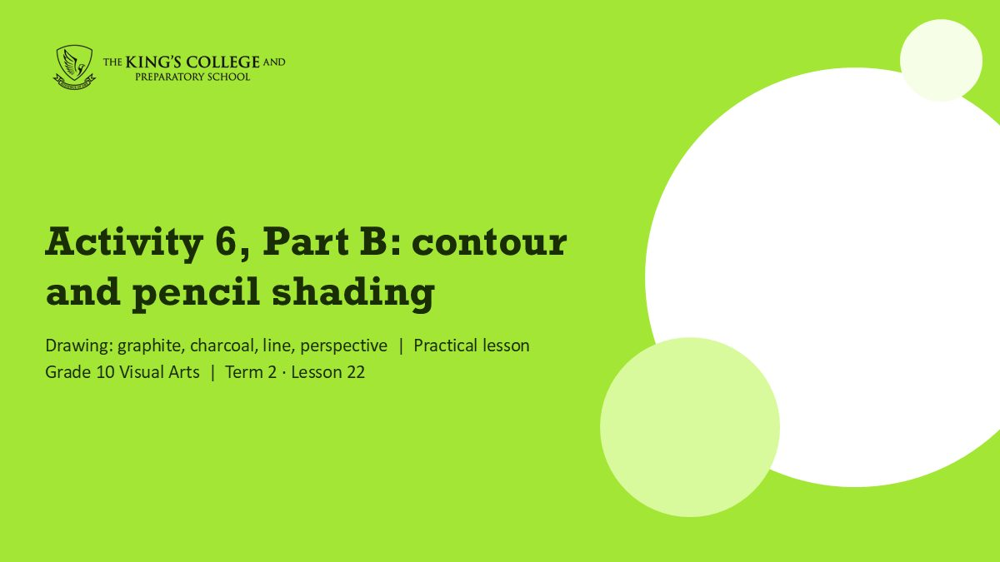

Term 2 · Lesson 22 · Practical lesson
Activity 6, Part B: contour and pencil shading
Start here
Today I will
- Make an accurate contour of my subject
- Shade it with a full tonal range
- Photograph and annotate each stage
Think first
You have drawn this subject in torn paper. What can a pencil do that paper scraps cannot?
Words to know
- Contour
- A line following the edges and surface changes of a form, used here as the base for shading.
- Tonal shading
- Using a range of light to dark values to show light falling on a form.
- Tonal scale
- A row of steps from white to the darkest dark, used to test pencils.
- Stages
- The steps of a drawing from first lines to finished work, each documented with a photo.
- Reflected light
- Faint light bouncing back onto the shadow side of a form from a nearby surface.
Slides

Notes
The same subject in graphite: contour first, then tonal shading; photographing each stage.
From contour to tone
- Tonal scale: Test your pencils in a seven-step scale from white to your darkest dark.
- Light contour: Draw the contour lightly with HB so the lines disappear into the shading.
- Mid-tone over all: Lay an even mid-tone over everything except the highlight.
- Build the darks: Use 2B to 6B for shadows, the core shadow and the cast shadow.
- Lift the lights: Use a putty eraser to lift highlights and reflected light at the end.
Paper (Part A) and pencil (Part B)
| Torn paper | Graphite pencil |
|---|---|
| Tone made by choosing scraps of different values | Tone made by pressure and pencil grade |
| Bold, broken edges and colour | Smooth blends and fine detail |
| Hard to correct once glued | Can be lifted and adjusted with erasers |
| Strong for overall form | Strong for texture and subtle surface changes |
Remember
Contour lightly, tone patiently, and let the darkest dark make the light shine.
Practical
You need: Graphite pencils HB to 6B, cartridge paper, erasers, blending stump or tissue, subject or photo, phone
Activity 6, Part B: contour and pencil shading
- Make a seven-step tonal scale in the margin with your pencils.
- Draw the contour of your subject lightly and at the same size as Part A.
- Photograph the contour stage.
- Lay an even mid-tone over the form, leaving the highlights clean.
- Begin building the darkest shadows with soft pencils, following the curve of the form.
- Photograph the shading stage and annotate your VJ with the pencils you used where.
Test yourself
- Which pencils are best for the darkest shadows and why?
- What is reflected light?
- Why do you photograph each stage?
Show answers
1. Soft pencils such as 4B or 6B, because they make darker, richer marks. 2. Faint light bouncing back onto the shadow side of a form from a nearby surface. 3. To document the process in the VJ and show how the work developed.